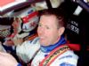

To enjoy all areas of this website including access to competitions and special offers, please log-in or register here, thank you.

Next weekend will see the start of the 2002 Acropolis Rally, known as the toughest event at the season mid-point not only for it's blistering heat, but also the damage that is inflicted on the Ford Focus RS WRC cars by the rock strewn roads - this really is an extreme and challenging event. It is also one which has suited the Ford Rallye Sport team in the past showing the endurance and capabilities of the drivers and the reliability of the Ford Focus. With first place in 2000 and 2001 could it be a hat-trick win in 2002? Keep logging on next week and we'll keep you up to date with all the news and results as they come in.
Latest Headlines
Colin puts his faith in the focus
Third place for McRae in Argentina added impetus to his title challenge, although the 33-y ...